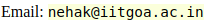

Neha Karanjkar
 |
 Room F10, Lab 2, Acad block A,Indian Institute of Technology Goa, Farmagudi, Ponda, Goa 403401 |
My research interests are in Modeling, Simulation and Optimization of Discrete-event Systems
in applications areas such as computer system design, digital twins and retail.
My current focus is on building scalable simulation frameworks
for discrete-event and mixed discrete-continuous systems.
I obtained my M.Tech and Ph.D degrees from the Electrical Engineering department at IIT Bombay and was a Post-doctoral fellow at the Robert Bosch Centre for Cyber-Physical Systems (RBCCPS), IISc Bangalore. I currently serve as a member of the ACM India Education committee and the Chairperson of the ACM Goa Professional Chapter.